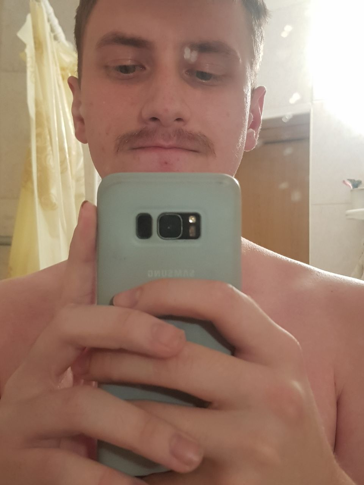

Murashko Maxim
Frontend developer
About me
An ordinary Belarusian guy who wants to become a good IT specialist. Very kind and non-toxic. am diligent and do not throw the case halfway, although sometimes I am short-tempered. I like to make new acquaintances and talk to people on various topics. Open to all people who have a desire to communicate. We teach easily and absorb information like a sponge.